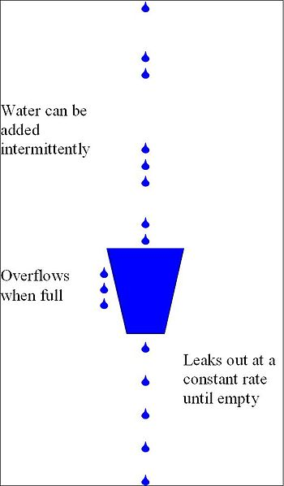

5.6 Ratelimit 服务流量限制
计算机程序可依据其瓶颈分为 Disk IO-bound，CPU-bound，Network-bound，分布式场景下有时候也会外部系统而导致自身瓶颈。
web 系统打交道最多的是网络，无论是接收，解析用户请求，访问存储，还是把响应数据返回给用户，都是要走网络的。在没有 epoll/kqueue 之类的系统提供的 IO 多路复用接口之前，多个核心的现代计算机最头痛的是 C10k 问题，C10k 问题会导致计算机没有办法充分利用 CPU 来处理更多的用户连接，进而没有办法通过优化程序提升 CPU 利用率来处理更多的请求。
自从 linux 实现了 epoll，freebsd 实现了 kqueue，这个问题基本解决了，我们可以借助内核提供的 API 轻松解决当年的 C10k 问题，也就是说如今如果你的程序主要是和网络打交道，那么瓶颈一定在用户程序而不在操作系统内核。
随着时代的发展，编程语言对这些系统调用又进一步进行了封装，如今做应用层开发，几乎不会在程序中看到 epoll 之类的字眼，大多数时候我们就只要聚焦在业务逻辑上就好。Go 的 net 库针对不同平台封装了不同的 syscall API，http 库又是构建在 net 库之上，所以在 Go 我们可以借助标准库，很轻松地写出高性能的 http 服务，下面是一个简单的 hello world 服务的代码：
package main
import (
"io"
"log"
"net/http"
)
func sayhello(wr http.ResponseWriter, r *http.Request) {
wr.WriteHeader(200)
io.WriteString(wr, "hello world")
}
func main() {
http.HandleFunc("/", sayhello)
err := http.ListenAndServe(":9090", nil)
if err != nil {
log.Fatal("ListenAndServe:", err)
}
}
我们需要衡量一下这个 web 服务的吞吐量，再具体一些，实际上就是接口的 QPS。借助 wrk，在家用电脑 Macbook Pro 上对这个 hello world 服务进行基准测试，Mac 的硬件情况如下：
CPU: Intel(R) Core(TM) i5-5257U CPU @ 2.70GHz
Core: 2
Threads: 4
Graphics/Displays:
Chipset Model: Intel Iris Graphics 6100
Resolution: 2560 x 1600 Retina
Memory Slots:
Size: 4 GB
Speed: 1867 MHz
Size: 4 GB
Speed: 1867 MHz
Storage:
Size: 250.14 GB (250,140,319,744 bytes)
Media Name: APPLE SSD SM0256G Media
Size: 250.14 GB (250,140,319,744 bytes)
Medium Type: SSD
测试结果：
~ ❯❯❯ wrk -c 10 -d 10s -t10 http://localhost:9090
Running 10s test @ http://localhost:9090
10 threads and 10 connections
Thread Stats Avg Stdev Max +/- Stdev
Latency 339.99us 1.28ms 44.43ms 98.29%
Req/Sec 4.49k 656.81 7.47k 73.36%
449588 requests in 10.10s, 54.88MB read
Requests/sec: 44513.22
Transfer/sec: 5.43MB
~ ❯❯❯ wrk -c 10 -d 10s -t10 http://localhost:9090
Running 10s test @ http://localhost:9090
10 threads and 10 connections
Thread Stats Avg Stdev Max +/- Stdev
Latency 334.76us 1.21ms 45.47ms 98.27%
Req/Sec 4.42k 633.62 6.90k 71.16%
443582 requests in 10.10s, 54.15MB read
Requests/sec: 43911.68
Transfer/sec: 5.36MB
~ ❯❯❯ wrk -c 10 -d 10s -t10 http://localhost:9090
Running 10s test @ http://localhost:9090
10 threads and 10 connections
Thread Stats Avg Stdev Max +/- Stdev
Latency 379.26us 1.34ms 44.28ms 97.62%
Req/Sec 4.55k 591.64 8.20k 76.37%
455710 requests in 10.10s, 55.63MB read
Requests/sec: 45118.57
Transfer/sec: 5.51MB
多次测试的结果在 4w 左右的 QPS 浮动，响应时间最多也就是 40ms 左右，对于一个 web 程序来说，这已经是很不错的成绩了，我们只是照抄了别人的示例代码，就完成了一个高性能的 hello world 服务器，是不是很有成就感？
这还只是家用 PC，线上服务器大多都是 24 核心起，32G 内存+，CPU 基本都是 Intel i7。所以同样的程序在服务器上运行会得到更好的结果。
这里的 hello world 服务没有任何业务逻辑。真实环境的程序要复杂得多，有些程序偏 Network-bound，例如一些 cdn 服务、proxy 服务；有些程序偏 CPU/GPU bound，例如登陆校验服务、图像处理服务；有些程序偏 Disk IO-bound，例如专门的存储系统，数据库。不同的程序瓶颈会体现在不同的地方，这里提到的这些功能单一的服务相对来说还算容易分析。如果碰到业务逻辑复杂代码量巨大的模块，其瓶颈并不是三下五除二可以推测出来的，还是需要从压力测试中得到更为精确的结论。
对于 IO/Network bound 类的程序，其表现是网卡/磁盘 IO 会先于 CPU 打满，这种情况即使优化 CPU 的使用也不能提高整个系统的吞吐量，只能提高磁盘的读写速度，增加内存大小，提升网卡的带宽来提升整体性能。而 CPU bound 类的程序，则是在存储和网卡未打满之前 CPU 占用率提前到达 100%，CPU 忙于各种计算任务，IO 设备相对则较闲。
无论哪种类型的服务，在资源使用到极限的时候都会导致请求堆积，超时，系统 hang 死，最终伤害到终端用户。对于分布式的 web 服务来说，瓶颈还不一定总在系统内部，也有可能在外部。非计算密集型的系统往往会在关系型数据库环节失守，而这时候 web 模块本身还远远未达到瓶颈。
不管我们的服务瓶颈在哪里，最终要做的事情都是一样的，那就是流量限制。
5.6.1 常见的流量限制手段
流量限制的手段有很多，最常见的：漏桶、令牌桶两种：
- 漏桶是指我们有一个一直装满了水的桶，每过固定的一段时间即向外漏一滴水。如果你接到了这滴水，那么你就可以继续服务请求，如果没有接到，那么就需要等待下一滴水。
- 令牌桶则是指匀速向桶中添加令牌，服务请求时需要从桶中获取令牌，令牌的数目可以按照需要消耗的资源进行相应的调整。如果没有令牌，可以选择等待，或者放弃。
这两种方法看起来很像，不过还是有区别的。漏桶流出的速率固定，而令牌桶只要在桶中有令牌，那就可以拿。也就是说令牌桶是允许一定程度的并发的，比如同一个时刻，有 100 个用户请求，只要令牌桶中有 100 个令牌，那么这 100 个请求全都会放过去。令牌桶在桶中没有令牌的情况下也会退化为漏桶模型。

实际应用中令牌桶应用较为广泛，开源界流行的限流器大多数都是基于令牌桶思想的。并且在此基础上进行了一定程度的扩充，比如 github.com/juju/ratelimit 提供了几种不同特色的令牌桶填充方式：
func NewBucket(fillInterval time.Duration, capacity int64) *Bucket
默认的令牌桶，fillInterval 指每过多长时间向桶里放一个令牌，capacity 是桶的容量，超过桶容量的部分会被直接丢弃。桶初始是满的。
func NewBucketWithQuantum(fillInterval time.Duration, capacity, quantum int64) *Bucket
和普通的 NewBucket 的区别是，每次向桶中放令牌时，是放 quantum 个令牌，而不是一个令牌。
func NewBucketWithRate(rate float64, capacity int64) *Bucket
这个就有点特殊了，会按照提供的比例，每秒钟填充令牌数。例如 capacity 是 100，而 rate 是 0.1，那么每秒会填充 10 个令牌。
从桶中获取令牌也提供了几个 API：
func (tb *Bucket) Take(count int64) time.Duration {}
func (tb *Bucket) TakeAvailable(count int64) int64 {}
func (tb *Bucket) TakeMaxDuration(count int64, maxWait time.Duration) (time.Duration, bool) {}
func (tb *Bucket) Wait(count int64) {}
func (tb *Bucket) WaitMaxDuration(count int64, maxWait time.Duration) bool {}
名称和功能都比较直观，这里就不再赘述了。相比于开源界更为有名的 google 的 Java 工具库 Guava 中提供的 ratelimiter，这个库不支持令牌桶预热，且无法修改初始的令牌容量，所以可能个别极端情况下的需求无法满足。但在明白令牌桶的基本原理之后，如果没办法满足需求，相信你也可以很快对其进行修改并支持自己的业务场景。
5.6.2 原理
从功能上来看，令牌桶模型实际上就是对全局计数的加减法操作过程，但使用计数需要我们自己加读写锁，有小小的思想负担。如果我们对 Go 语言已经比较熟悉的话，很容易想到可以用 buffered channel 来完成简单的加令牌取令牌操作：
var tokenBucket = make(chan struct{}, capacity)
每过一段时间向 tokenBucket 中添加 token，如果 bucket 已经满了，那么直接放弃：
fillToken := func() {
ticker := time.NewTicker(fillInterval)
for {
select {
case <-ticker.C:
select {
case tokenBucket <- struct{}{}:
default:
}
fmt.Println("current token cnt:", len(tokenBucket), time.Now())
}
}
}
把代码组合起来：
package main
import (
"fmt"
"time"
)
func main() {
var fillInterval = time.Millisecond * 10
var capacity = 100
var tokenBucket = make(chan struct{}, capacity)
fillToken := func() {
ticker := time.NewTicker(fillInterval)
for {
select {
case <-ticker.C:
select {
case tokenBucket <- struct{}{}:
default:
}
fmt.Println("current token cnt:", len(tokenBucket), time.Now())
}
}
}
go fillToken()
time.Sleep(time.Hour)
}
看看运行结果：
current token cnt: 98 2018-06-16 18:17:50.234556981 +0800 CST m=+0.981524018
current token cnt: 99 2018-06-16 18:17:50.243575354 +0800 CST m=+0.990542391
current token cnt: 100 2018-06-16 18:17:50.254628067 +0800 CST m=+1.001595104
current token cnt: 100 2018-06-16 18:17:50.264537143 +0800 CST m=+1.011504180
current token cnt: 100 2018-06-16 18:17:50.273613018 +0800 CST m=+1.020580055
current token cnt: 100 2018-06-16 18:17:50.2844406 +0800 CST m=+1.031407637
current token cnt: 100 2018-06-16 18:17:50.294528695 +0800 CST m=+1.041495732
current token cnt: 100 2018-06-16 18:17:50.304550145 +0800 CST m=+1.051517182
current token cnt: 100 2018-06-16 18:17:50.313970334 +0800 CST m=+1.060937371
在 1s 钟的时候刚好填满 100 个，没有太大的偏差。不过这里可以看到，Go 的定时器存在大约 0.001s 的误差，所以如果令牌桶大小在 1000 以上的填充可能会有一定的误差。对于一般的服务来说，这一点误差无关紧要。
上面的令牌桶的取令牌操作实现起来也比较简单，简化问题，我们这里只取一个令牌：
func TakeAvailable(block bool) bool{
var takenResult bool
if block {
select {
case <-tokenBucket:
takenResult = true
}
} else {
select {
case <-tokenBucket:
takenResult = true
default:
takenResult = false
}
}
return takenResult
}
一些公司自己造的限流的轮子就是用上面这种方式来实现的，不过如果开源版 ratelimit 也如此的话，那我们也没什么可说的了。现实并不是这样的。
我们来思考一下，令牌桶每隔一段固定的时间向桶中放令牌，如果我们记下上一次放令牌的时间为 t1，和当时的令牌数 k1，放令牌的时间间隔为 ti，每次向令牌桶中放 x 个令牌，令牌桶容量为 cap。现在如果有人来调用 TakeAvailable 来取 n 个令牌，我们将这个时刻记为 t2。在 t2 时刻，令牌桶中理论上应该有多少令牌呢？伪代码如下：
cur = k1 + ((t2 - t1)/ti) * x
cur = cur > cap ? cap : cur
我们用两个时间点的时间差，再结合其它的参数，理论上在取令牌之前就完全可以知道桶里有多少令牌了。那劳心费力地像本小节前面向 channel 里填充 token 的操作，理论上是没有必要的。只要在每次 Take 的时候，再对令牌桶中的 token 数进行简单计算，就可以得到正确的令牌数。是不是很像 惰性求值 的感觉？
在得到正确的令牌数之后，再进行实际的 Take 操作就好，这个 Take 操作只需要对令牌数进行简单的减法即可，记得加锁以保证并发安全。github.com/juju/ratelimit 这个库就是这样做的。
5.6.3 服务瓶颈和 QoS
前面我们说了很多 CPU-bound、IO-bound 之类的概念，这种性能瓶颈从大多数公司都有的监控系统中可以比较快速地定位出来，如果一个系统遇到了性能问题，那监控图的反应一般都是最快的。
虽然性能指标很重要，但对用户提供服务时还应考虑服务整体的 QoS。QoS 全称是 Quality of Service，顾名思义是服务质量。QoS 包含有可用性、吞吐量、时延、时延变化和丢失等指标。一般来讲我们可以通过优化系统，来提高 web 服务的 CPU 利用率，从而提高整个系统的吞吐量。但吞吐量提高的同时，用户体验是有可能变差的。用户角度比较敏感的除了可用性之外，还有时延。虽然你的系统吞吐量高，但半天刷不开页面，想必会造成大量的用户流失。所以在大公司的 web 服务性能指标中，除了平均响应时延之外，还会把响应时间的 95 分位，99 分位也拿出来作为性能标准。平均响应在提高 CPU 利用率没受到太大影响时，可能 95 分位、 99 分位的响应时间大幅度攀升了，那么这时候就要考虑提高这些 CPU 利用率所付出的代价是否值得了。
在线系统的机器一般都会保持 CPU 有一定的余裕。